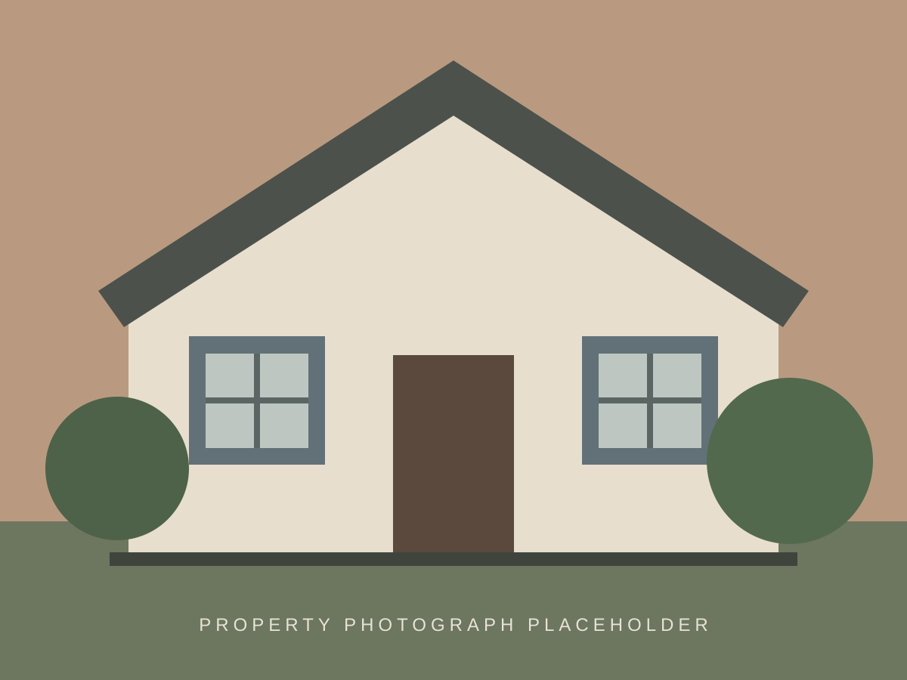

87 / 100
£825,000
Penge · SE204 bedrooms · Freehold · 7 min to Penge East
A wide Victorian house with compromised rooms, retained joinery and a larger-than-average side return.
Independent property intelligence · South London
Bare Bones finds overlooked homes, promising streets and renovation opportunities that deserve a closer look.

The current shortlist
Six fictional examples selected for underlying quality, location and plausible scope to add value—not simply a low asking price.
4 bedrooms · Freehold · 7 min to Penge East
A wide Victorian house with compromised rooms, retained joinery and a larger-than-average side return.
3 bedrooms · Freehold · 5 min to Anerley
Poor presentation obscures generous proportions on a quiet street between two useful stations.
4 bedrooms · Freehold · 9 min to Sydenham
A probate-style sale with original fireplaces, deep garden and an inefficient rear arrangement.
3 bedrooms · Freehold · 11 min to Peckham Rye
An unmodernised terrace just beyond the best-known streets, with a coherent façade and intact plan.
4 bedrooms · Freehold · 8 min to West Dulwich
An auction lot needing full refurbishment, but with rare family-house scale and a sound street position.
5 bedrooms · Freehold · 12 min to Gipsy Hill
A substantial house with dated finishes and potential to restore hierarchy to heavily altered rooms.
Prototype listings are fictional. Scores, prices, distances and assessments are illustrative.
Opportunity 01 · Penge
The discount is only interesting if the house, street and likely works support a credible route to value.
Street-level context
Looking past postcode shorthand to the housing stock, connections and local value gaps that shape an opportunity.
Bare Bones view Look below the ridge and beyond the triangle for compromised houses with scale.
Bare Bones view One of the clearest house-for-money cases when the street is chosen carefully.
Bare Bones view The label can suppress interest more than the housing or connections justify.
Bare Bones view Focus on intact houses just outside the obvious conservation-area appeal.
Bare Bones view Auction and poorly presented stock can create rare entry points into high-quality streets.
Community judgement
Cast one local vote on the house whose underlying opportunity you rate most highly.
£825,000 · 4 beds
£775,000 · 3 beds
£895,000 · 4 beds
Members’ choice Penge Victorian
All visitors’ choice Vote to reveal
Sold-price test
A three-bedroom Victorian terrace near Lower Sydenham, requiring updating but retaining a 70-foot garden.
Specialist directory
Craft & conservation
Repair-led work for sash windows, lime plaster, joinery and historic façades across South London.
View specialist profile →Design & planning
Feasibility studies and sensitive extensions for Victorian and Edwardian family houses.
View specialist profile →